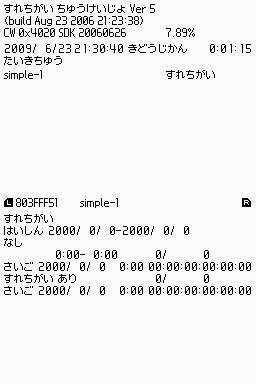
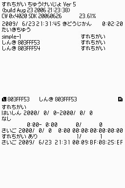

RelayStation
概要
RelayStation は任天堂が全国で運用している「すれちがい中継所」と同等の機能を提供する、共通すれちがい通信中継所プログラムです。
WXC ライブラリを用いてすれちがい通信機能を実現する場合、すれちがい中継所経由でデータが交換されても問題が発生しないよう、適切に対応する必要がありますので、その検証用に使用してください。
起動準備と操作方法
- RelayStation はバックアップメモリを使用しますので、2Mbit FLASH の搭載されたフラッシュカードを用意してください。
RelayStation を DS 実機で動作させる場合には RelayStation.srl をフラッシュカードに焼いて実行してください。
また、デバッガで動作させる場合には、デバッガのカードスロットにフラッシュカードを接続して実行してください。
- RelayStation は初回起動時に各種設定をバックアップメモリに保存するほか、起動後 1 時間毎に自動保存します。
従って、予め RelayStation を実行させる DS 実機 (あるいはデバッガ) の 「本体設定」
の 「時刻」 を正しい時刻に設定しておいてください。
- バックアップメモリに有効な RalayStation のデータが存在しなかった場合、初期設定ファイルがロードされ、下図の状態で起動します。

- この画面での操作方法は以下の通りです。
| ボタン | 操作 |
|---|
| ↑↓ | 上画面の登録アプリケーション一覧のスクロール
|
| L R | 下画面の登録アプリケーションの詳細情報切り替え
|
| START | 状態の保存
|
- 起動時に [start]＋[select]＋[L]＋[R] を押し続ける事で、すれちがい中継所を初期設定状態にリセットできます。
解説
- 初期設定状態では TwlSDK の WXC サンプルデモ simple-1 のみ登録されています。
初めて simple-1 とすれちがい通信を行う際、simple-1 には予め RelayStation に登録されているデータを送信し、simple-1 から受け取ったデータを次回の送信データとして保存します。
- 未登録のアプリケーションとすれ違った場合、そのアプリケーションを「しんき」として自動登録し、以降は対応アプリケーションして扱います。
初めて自動登録されたアプリケーションとすれちがい通信を行う際、相手にはサイズが 0 バイトのデータを送信し、相手から受け取ったデータを次回の送信用データとして保存します。

注意事項
- RelayStation は、WXC ライブラリを用いずに独自にすれちがい通信機能を実装したアプリケーションには対応しません。
- 実際のすれちがい中継所は、すれちがい通信の中継所としてだけでなく、所定のデータフォーマットに準じたデータ配信機能も有していますが、RelayStation ではサポートしていません。
- RelayStation は、機能的にはすれちがい中継所と同等ですので、意図せず市販のすれちがい通信対応アプリケーションと通信してしまう可能性があります。
無用なトラブルを避けるためにも、RelayStation の利用は必要最低限に留め、検証作業が終わり次第速やかに終了させてください。
場所
$TwlSDK/bin/ARM9-TS/Rom/RelayStation.srl
参照
履歴
2009/07/15 初版作成